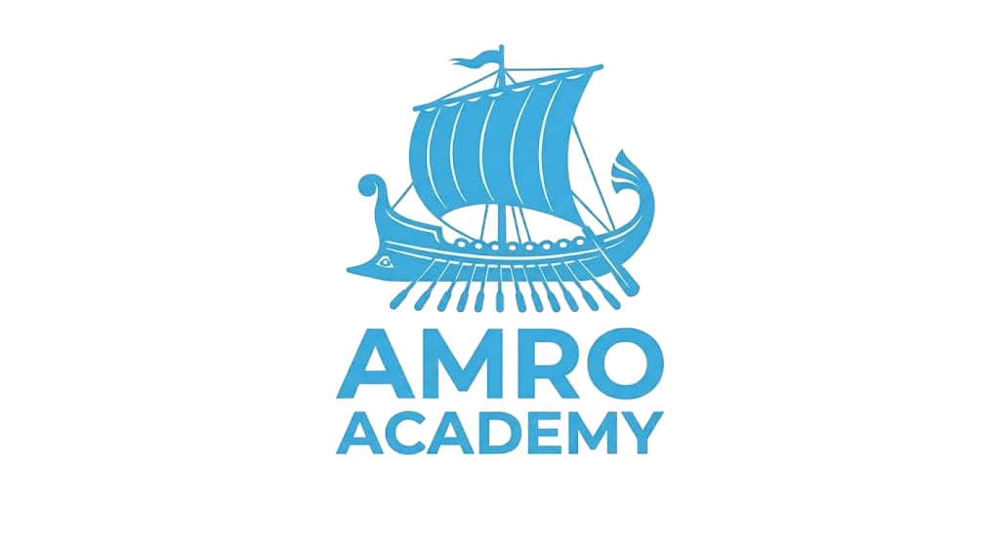

10 sessions over 4 weeks
This month your child will complete 10 one-hour math sessions that follow the Lebanese Grade 10 program (English section) while building the skills tested on the SAT, with homework after every session and two progress tests.
Each session covers a Grade 10 topic first, then shows how the same skill appears on the SAT. This way, the work supports school grades now and builds toward the SAT in Grades 11 and 12.
Sessions are scheduled 2–3 times per week, at times that fit your child's school schedule.
| # | Topic (Grade 10 program) | SAT skill built | Homework |
|---|---|---|---|
| 1 | Starting assessment; calculations in ℝ: powers, square roots, scientific notation | Exponent rules | 20-question worksheet + 5 SAT-style questions |
| 2 | Algebraic expressions: expanding, notable identities, factoring | Equivalent expressions | Factoring worksheet + 5 SAT-style questions |
| 3 | First-degree equations and inequalities; absolute value | Linear equations and inequalities | Equations worksheet + 8 word problems |
| 4 | Systems of two linear equations: substitution, elimination, graphs; word problems | Systems of equations, number of solutions | 10 systems + 4 word problems |
| 5 | Mid-month test (sessions 1–4), then review of every mistake | — | Corrections of the test |
| 6 | Functions: domain, reading graphs, linear (affine) functions and slope | Linear functions and models | Graph-reading worksheet + 6 SAT-style questions |
| 7 | Lines in the coordinate plane: equations, parallel and perpendicular lines, midpoint, distance | Lines in the xy-plane | Coordinate geometry worksheet |
| 8 | Percentages, ratios and proportions; statistics: mean, median, tables | Problem-solving and data analysis | Data worksheet + 8 SAT-style questions |
| 9 | Geometry: Thales' theorem, similar triangles, right-triangle trigonometry | Geometry and trigonometry | Geometry worksheet + 6 SAT-style questions |
| 10 | End-of-month test: a school-style part and an SAT-style part, then results and next steps | — | — |
Go over the previous homework and fix mistakes together.
Explain the concept with worked examples.
Your child solves problems with support.
Two or three SAT-style questions on the same skill.
Your child will have about 2 hours of math work outside sessions each week.
| Type | When | Time | What it includes |
|---|---|---|---|
| Session homework | After each session, due at the next one | ≈45 min | A worksheet on the lesson, plus SAT-style questions on the same skill |
| Weekend review | Once each weekend | 30 min | A short mixed quiz covering the week, sent online |
| Test corrections | After each test | ≈30 min | Redo every missed question with a written explanation |
Over the month this adds up to about 10 homework assignments, 3 weekend reviews and 2 tests. Homework is sent the same day as each session, with answers and short solutions shared after it's checked.
You will receive a short update every week and a full written report at the end of the month.
Progress depends as much on the work between sessions as on the sessions themselves.